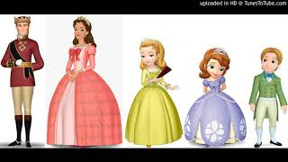

Queen Miranda, Second from the left, Preceeded by by King Roland II,
to the Left is Princess Sofia I, Princess Amber and Prince James
singing, in Count on Baileywick, ,
Here's a More about Queen Miranda:
1914 - Born in Cresco, Iowa
1933 - Leaves his family's farm to attend the University of
Minnesota, thanks to a Depression era program known as the "National
Youth Administration"
1935 - Has to stop school and save up more money. Works in the
Civilian Conservation Corps, helping starving Americans. "I saw how
food changed them", he said. "All of this left scars on me."
1937 - Finishes university and takes a job in the US Forestry
Service
1938 - Marries wife of 69 years Margret Gibson. Gets laid off due to
budget cuts. Inspired by Elvin Charles Stakman, he returns to school
study under Stakman, who teaches him about breeding pest-resistent
plants.
1941 - Tries to enroll in the military after the Pearl Harbor
attack, but is rejected. Instead, the military asked his lab to work
on waterproof glue, DDT to control malaria, disinfectants, and other
applied science.